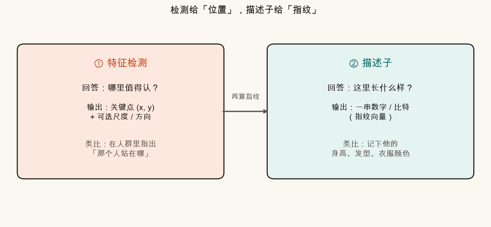
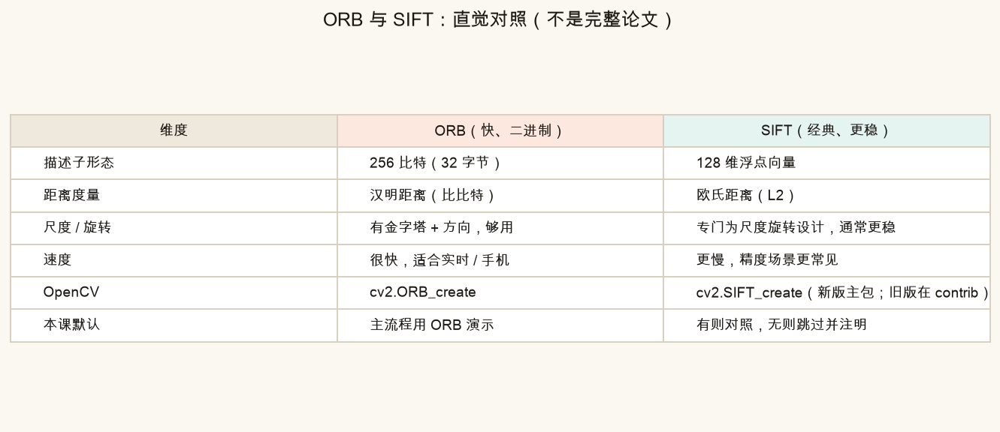
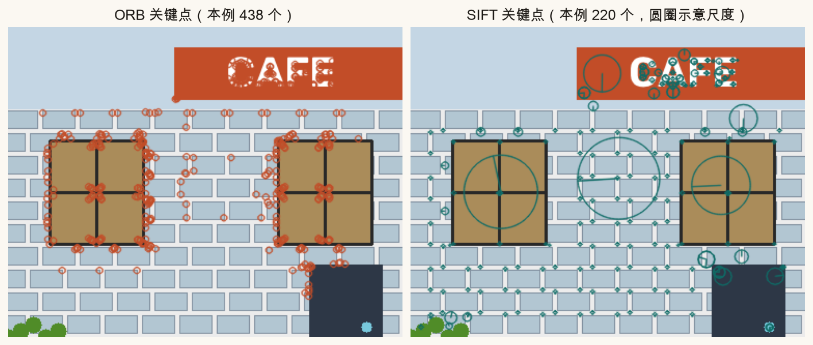
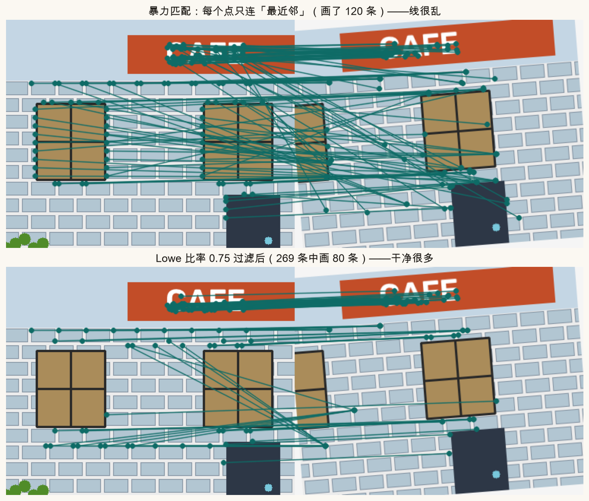
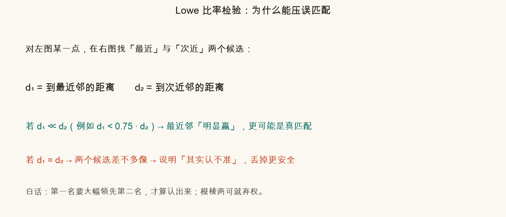
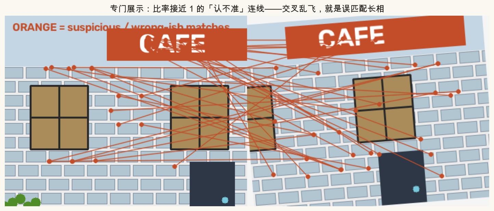
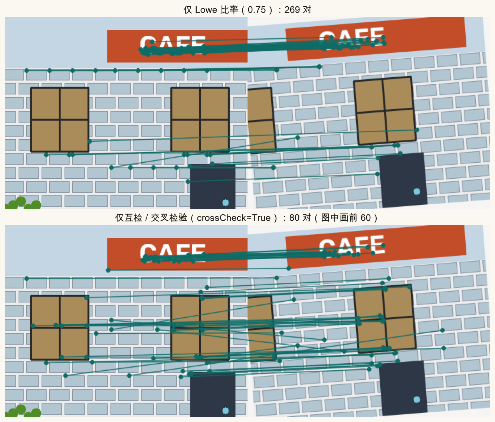
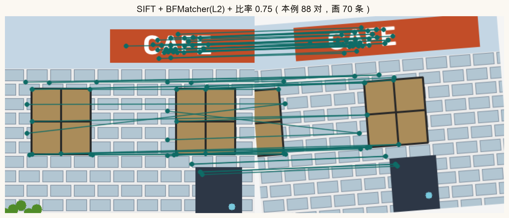
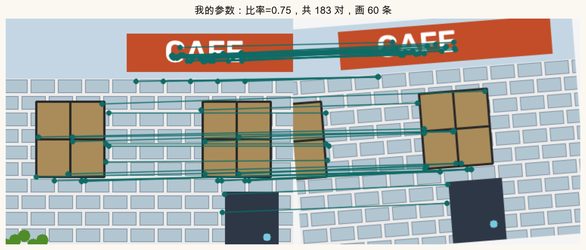

第 6 篇 · 指纹与配对 · 约 55 分钟
第 5 篇找到了「值得认的点」。这一篇给每个点算一串「指纹」（描述子），再到另一张图里找最像的指纹——这就是特征匹配。你会看见暴力匹配有多乱、Lowe 比率怎样净化连线，以及误匹配长什么样。
拼接要把图 B 对齐到图 A，你至少要知道：图 B 里的哪些点，对应图 A 里的哪些点。
第 5 篇的检测只告诉你「这里有个角点」。角点本身只是坐标 (x, y)。两张图各检出几百个点之后，你并不能凭空知道「左图第 17 号点」该连到「右图哪一个」。
解决办法：在每个关键点周围看一小块灰度图案，把它压成一串固定长度的数——这串数就是描述子（descriptor）。匹配 = 在另一张图里找「指纹最像」的点。
生活类比：相亲宴上，只报「第 3 桌左边那位」不够；还要记下身高、发型、衣服颜色。下次在人群里找人，靠的是这些特征，不是桌号。
记住流水线的两步，顺序不能反：

detectAndCompute，一步做完两件事。描述子要尽量满足：同一物理点在轻微缩放、旋转、亮度变化后，指纹仍然相近；不同物理点的指纹尽量拉开。做不到完美，所以后面一定还有误匹配——第 7 篇的 RANSAC 会继续收拾。
orb = cv2.ORB_create(nfeatures=1200)
kps, desc = orb.detectAndCompute(gray, None)
# kps[i].pt → (x, y)
# desc[i] → 该点的指纹（ORB 是 32 个字节）工业界和教材里最常拿来对比的两套是 ORB 与 SIFT。本课默认用 ORB 跑通流程；本机若有 SIFT，脚本也会画一张对照图。

| 维度 | ORB | SIFT |
|---|---|---|
| 描述子 | 256 比特（32 字节） | 128 维浮点 |
| 距离 | 汉明距离（比有多少比特不同） | 欧氏距离 L2 |
| 尺度 / 旋转 | 有金字塔 + 方向，日常够用 | 专门为尺度旋转设计，通常更稳 |
| 速度 | 快，适合实时、手机 | 更慢，精度向场景更常见 |
| OpenCV | cv2.ORB_create |
cv2.SIFT_create（新版主包常有；旧版在 opencv-contrib） |
SIFT 曾因专利在部分发行版里被挪到 contrib。OpenCV 4.4+ / 5.x 的主包 opencv-python 往往已带回 SIFT_create。若你环境报没有，脚本会跳过 SIFT 图并以 ORB 为主——不影响学匹配逻辑。

暴力匹配（Brute-Force）字面意思：对左图每一个描述子，去右图全部描述子里算距离，取最近的那个。没有花哨索引，实现简单，点数不太多时完全够用。
# ORB：汉明距离
bf = cv2.BFMatcher(cv2.NORM_HAMMING, crossCheck=False)
# 每个查询点返回 k 个最近邻（后面比率检验需要 k=2）
knn = bf.knnMatch(desc1, desc2, k=2)
# SIFT：L2 距离
bf_sift = cv2.BFMatcher(cv2.NORM_L2, crossCheck=False)若只取「最近邻」一条边、不做过滤，连线图会像毛线团——重复纹理（砖缝、窗格）特别容易认错。

David Lowe（SIFT 作者）提出的实用招数：对每个左图点，不只看最近邻，还看次近邻。
保留，当且仅当 d1 < ratio · d2
其中 d1 是到最近邻的距离，d2 是到次近邻的距离。常用 ratio = 0.7 ~ 0.8；本课默认 0.75。

为什么能压误匹配？
good = []
for pair in knn:
if len(pair) < 2:
continue
m, n = pair[0], pair[1] # 最近、次近
if m.distance < 0.75 * n.distance:
good.append(m)比率越小越严：留下的更少、更干净，但也可能误杀真匹配。越大越松：线更多，垃圾也更多。下面滑块可以亲自感受。
净化之前，先学会用眼睛认外点。好匹配的连线大致平行、方向一致（两图只是平移+微旋转时尤其明显）。误匹配则交叉乱飞：左图窗户连到右图招牌、砖缝连到门把手……

脚本里把左右图横拼再画线，等价于 OpenCV 的 drawMatches 思路。读图时先看整体趋势，再盯个别离谱线段。
另一条常用净化规则叫互检（cross-check / 交叉检验）：
OpenCV 里打开 crossCheck=True 时，match（不是 knnMatch）会直接做这件事：
bf = cv2.BFMatcher(cv2.NORM_HAMMING, crossCheck=True)
matches = bf.match(desc1, desc2)
注意：crossCheck=True 时通常配合 match；若你还想做比率检验，需要 crossCheck=False + knnMatch(..., k=2)。本课「改这里」里用开关二选一演示，避免搅在一起。
若环境有 SIFT，脚本还会多画一张 SIFT + L2 + 比率的结果，方便你和 ORB 对照：

SIFT_create 时生成）。没有 SIFT 时此图可能缺失，以 ORB 图为准即可。下面用脚本导出的真实 ORB 匹配（含 d1、d2）。拖动比率阈值：越小越严，青色保留线越少；调到 1.0 接近「不过滤」。橙色虚线是当前被扔掉的匹配。
source .venv/bin/activate # 若尚未激活
MPLCONFIGDIR=/tmp/mpl-cache python code/ch06_matching.py会写出 ch06_detect_vs_desc.png、ch06_bf_vs_ratio.png、ch06_mismatches.png、ch06_cross_check.png 等，以及你的 ch06_my_matches.png。末尾打印「自检通过」。
打开 code/ch06_matching.py，只改顶部参数区：
MY_RATIO 从 0.75 改成 0.55，再跑脚本：留下的线应更少、更干净；再改成 0.95，线变多、交叉回来。MY_MAX_DRAW 改成 20，观察「只画最好的一小撮」时图是否更好读。MY_CROSS_CHECK = True，此时脚本走互检分支（不再用比率）。对比 ch06_my_matches.png 与课文里的交叉检验图。MY_NFEATURES 改成 200 与 2000：点太少匹配稀疏；点太多计算变慢、重复纹理干扰也更多。
ch06_my_matches.png：专给你调参。改完务必重新运行脚本才会更新。检测回答「哪里值得认」（给出位置）；描述子回答「这里长什么样」（给出指纹向量）。
ORB 用汉明距离（二进制比特比不同）；SIFT 用欧氏距离（L2）。
要求最近邻明显优于次近邻。真匹配通常 d₁≪d₂；重复纹理时多个候选差不多像，d₁≈d₂，会被丢掉。
A→B 的最近邻与 B→A 的最近邻必须互指对方，单向「单相思」式最近邻会被剔除。
通常变少（更严）。可能更干净，也可能误杀一部分真匹配。
匹配再干净也会剩外点。下一篇用 RANSAC：随机抽几对点估单应，数有多少内点同意，留下最好的模型——接到 findHomography。